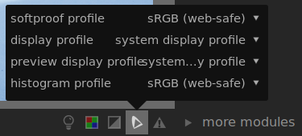

II.L - Gestion des couleurs : Darktable¶
Darktable est un logiciel libre et gratuit de retouche photo extrèmement complet et professionnel ; la gestion des couleurs y est très complète.
L.1 - Entrée et espace de travail¶
L’espace de travail des couleurs se règle par fichier, en même temps que l’entrée, via le module “input color profile”.

La configuration est très simple :
- input profile sert à définir le profil de l’image sur laquelle on travaille ; dans le cas d’une image jpeg par exemple, on choisira sRGB.
- working profile est l’espace de travail ; on préfère un espace au gamut* large, et linéaire. Darktable propose les plus utiles et courants, comme le Rec. 2020, Adobe RGB ou encore le prophoto dédié à la retouche photo.
- gamut clipping est une option intéressante permettant d’afficher sur l’image les zones dont les couleurs sont en dehors du gamut de l’espace donné ; on choisit en général ici l’espace de sortie.
Pour activer les alertes du gamut clipping il faut activer l’option via le bouton sous l’image :

L.2 - Sortie¶
La sortie se règle très simplement via le module “output color profile”.

L.3 - Épreuvage (Soft-Proofing)¶
L’épreuvage peut être activé et réglé avec les boutons sous l’image.

Un clic droit permet d’accéder aux réglages.
- softproof profile définit l’espace simulé/activé pour l’épreuvage. C’est là qu’on retrouve les profils ICC spécifiques pour l’impression qu’on aurait ajouté (voir plus bas).
- display profile permet de modifier l’espace de l’écran ; en général, on peut laisser “system display profile” (c’est le seul qui prendra en compte l’éventuelle calibration de l’écran). Sinon on choisira toujours l’espace normal de l’écran (sRGB en général).
- preview display profile est l’espace de l’éventuelle seconde fenêtre de prévisualisation de l’image, au cas où elle serait sur un deuxième écran différent.
- histogram profile définit l’espace utilisé par l’histogramme et la pipette de Darktable.
On peut ajouter ses propres profils de sortie et d’épreuvage en ajoutant les fichiers au format ICC dans le sous dossier color/out de l’installation de Darktable (ou le dossier $HOME/.config/darktable/ sous linux).